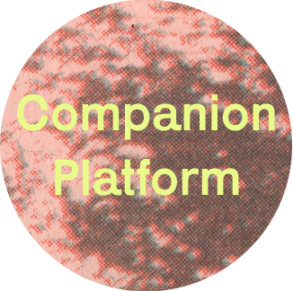

I sent a Google form to a few practicing designers & publishers to find out how making & publishing work can serve to build & maintain community.You can see & even submit your own answers to the Google form here.
How can publishing create community?



Luca, along with David Kasprzak, make up Colpa Press. Together they publish, design, print, & curate books & exhibitions. COLPA is based in the Mission District of San Francisco, CA.
MJ Balvanera is the creative director of the Feminist Center for Creative Work as well as Co-Conspirator Press in Los Angeles, CA. They work to cultivate the feminist creative community & practices.
Made up of Lexi Visco & Calvin Rocchio, Companion Platform is baed in Berkeley, CA & makes things in close collaboration with the communities & environments they live in.